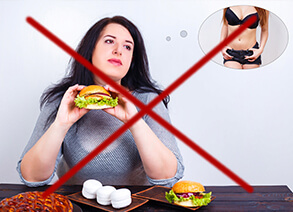

RAPORT SPECJALNY
Opublikowano
3 godz. temu
2916 Personen
Polak opracował kurację, która odchudza na potęgę – 14 kg w 1 miesiąc bez głodówki, bez ćwiczeń, bez efektu jo-jo

Prof. Stefan Kubiński
Koniec ery
nadwagi!!
Dietetycy drżą o swoje posady. Czy nowa metoda odchudzania pozbawi pracy tysiące z nich? Wybitni specjaliści ds. odżywiania nie mają wątpliwości, że tak. Wraz z opracowaniem przez polskiego profesora naturalnej, 2-fazowej formuły odchudzającej, nastąpił długo wyczekiwany przełom w walce z nadwagą.
Już ponad 14 tys. użytkowników kuracji w 28 dni schudło średnio 14 kg – bez wysiłku, bezpiecznie i bez efektu jo-jo. W efekcie zmniejszyli ryzyko zawału oraz udaru o 185%, 15-krotnie zmniejszyli poziom złego cholesterolu i uchronili się przed miażdżycą. Odzyskali atrakcyjną sylwetkę, pewność siebie i doskonałą kondycję. Jak to możliwe?
Prof. Stefan Kubiński (ekspert ds. biologii molekularnej) postanowił uwolnić swoją żonę od postępującej otyłości i kompleksów. To był początek rewolucji w walce z nadwagą. Profesor, po roku zaawansowanych badań laboratoryjnych, opracował naturalną, bezpieczną i łatwą w stosowaniu formułę odchudzającą. Dzięki niej, żona profesora w niespełna 2 miesiące straciła 26 kg i – jak sama dumnie przyznaje – „uzyskała figurę modelki”!
Profesjonalne pisma medyczne już okrzyknęły tę kurację „pionierskim osiągnięciem w dietetyce”, a profesor Kubiński otrzymał już kilkanaście prestiżowych nagród za swoje odkrycie naukowe. Dzięki działaniu jego 2-fazowej formuły, nawet osoby z dużą i długoletnią nadwagą (niezależnie od jej przyczyn) mogą schudnąć około 14 kg w 1 miesiąc – skutecznie bez głodówki i ćwiczeń.
„Dieta odchudzająca to męczarnia i pieniądze wyrzucone w błoto!” Jakie są powody, by tak przypuszczać?

Te słowa potwierdza już ponad 14 tys. zadowolonych użytkowników naturalnej, 2-fazowej formuły odchudzającej, którzy już przeszli kurację i cieszą się szczupłą sylwetką. Dlatego postanowiliśmy wziąć pod lupę znane dotąd diety odchudzające. A dokładniej sprawdzić, dlaczego nie przynoszą pożądanych efektów. Oto wnioski:
-
Większość diet ułożona jest przez amatorów
Żeby trwale schudnąć 2 kg trzeba głodzić się przez średnio 2,5 miesiąca. Oznacza to, że aby zejść do pożądanej wagi, potrzeba nawet kilku lat wyrzeczeń. Odmawiania sobie przyjemności i walki z samym sobą, żeby nie skusić się na ulubioną pizzę, deser czy ciastko. Wszystko dlatego, że 98% programów diet układanych jest przez totalnych amatorów. Ludzi, którzy nie mają pojęcia o działaniu organizmu, układu trawiennego i odpowiedzialnym odżywianiu. Diety te są szkodliwe dla organizmu, niebezpieczne dla zdrowia i kompletnie nieskuteczne.
-
Dieta osłabia organizm i zmniejsza odporność
Dieta skutkuje niedoborem witamin i mikroelementów. Organizm traci energię, przez co jesteśmy zmęczeni, rozdrażnieni i senni. Odporność organizmu na wirusy i bakterie radykalnie spada, w efekcie czego łatwo łapiemy choroby.
-
Dietetyczne produkty są groźne dla zdrowia
Producenci żywności wabią klientów produktami „fit”. Niestety, nawet jeśli zawierają dużo błonnika, to nafaszerowane są cukrem, który – jak wiadomo – tuczy bardziej niż hamburgery. Z kolei bezcukrowe produkty zawierają rakotwórczy aspartam!
-
Dieta to ciągły głód, wyrzeczenia i wyrzuty sumienia
Ciągła walka z apetytem i odmawianie sobie przyjemności jedzenia jest nie do przezwyciężenia. Z kolei sytuacje, gdy niepohamowany apetyt nas złamie podczas rodzinnego obiadu czy kolacji w gronie przyjaciół, są przyczyną bolesnych wyrzutów sumienia.
-
Dieta pochłania mnóstwo pieniędzy
Miesięczna opieka wykwalifikowanego dietetyka to wydatek rzędu min. 500 zł. Z kolei wszystkie produkty dietetyczne, niskokaloryczne i „fit” są zwyczajnie drogie. W efekcie, na „dietetyczne” jedzenie przeznaczamy nawet 4 razy więcej pieniędzy niż normalnie. Aby utrzymać wagę, musielibyśmy jeść w taki sposób całe życie. Żaden portfel tego nie wytrzyma.
-
Po diecie przychodzi efekt jo-jo
Osłabiony głodówką organizm automatycznie zaczyna zbierać zapasy energii na później, w związku z czym metabolizm zwalnia – aż całkiem hamuje. W efekcie, po diecie ciało wraca do poprzedniej wagi jeszcze szybciej niż trwało odchudzanie.
Właśnie dlatego 2-fazowa formuła odchudzająca prof. Kubińskiego to prawdziwy przełom w walce o szczupłą sylwetkę
Dieta odchudzająca wysysa z człowieka zdrowie, energię i ciężkie pieniądze. Ciągłe liczenie kalorii, pilnowanie pory posiłków i odmawianie sobie przyjemności jedzenia. Dręczący głód, zmęczenie i wyniszczenie organizmu. Tę wielką cenę płacimy za… rozczarowanie, ponieważ efekty zazwyczaj są znikome. Niemalże natychmiast powstaje efekt jo-jo, który niweczy cały wysiłek i długotrwałe wyrzeczenia.
Naturalna, 2-fazowa formuła odchudzająca prof. Kubińskiego działa zupełnie odwrotnie. Nie trzeba sobie niczego odmawiać, pilnować co i kiedy się zjada ani cierpieć przez uporczywy głód. Spalanie tłuszczu odbywa się automatycznie. Jak opisuje jeden z badanych: „Chudniesz leżąc przed telewizorem!” Ponadto, kuracja ustawia metabolizm na nowo i trwale blokuje efekt jo-jo. I to wszystko kosztuje dziennie mniej niż puszka coca-coli!
Schudnąć bez wysiłku, szybko i bezpiecznie może teraz każdy
2-fazowa formuła odchudzająca prof. Kubińskiego dostępna jest już w sprzedaży detalicznej pod nazwą Vanefist Neo. Formuła ma postać tabletek musujących, które należy rozpuścić w wodzie i wypić (co dodatkowo zapewnia porcję nawodnienia, tak ważnego dla dobrej kondycji organizmu). Stosowanie jest w pełni bezpieczne, czego dowiodły dodatkowe badania amerykańskiego ośrodka badawczego w Chicago. Badania te wykazały również, że kuracja ma ponad 98% skuteczności. Dzięki niej osoby w wieku 38-93 lat, w zaledwie 28 dni chudły średnio 14 kg. Bez względu na wiek oraz długość i przyczyny nadwagi.
Potwierdzona skuteczność
Osoby te już kilka godzin po pierwszym zastosowaniu zaczęły oczyszczać organizm z trujących złogów i toksyn, dzięki czemu stłumiły nadmierny apetyt i mogły wejść w fazę intensywnego spalania kalorii. W kolejnych dniach, badane osoby przestały podjadać pod wpływem stresu oraz całkowicie pokonały napady głodu. Następnie, z dnia na dzień obserwowały jak waga wskazuje mniej kilogramów, a obwody w pasie, biodrach i udach zmniejszają się nawet o kilka centymetrów dziennie!
Ale to nie wszystko. Poziom złego cholesterolu oraz cukru został zredukowany. Badani mieli średnio 3 razy więcej energii oraz 5-krotnie lepsze samopoczucie niż przed zastosowaniem 2-fazowej formuły odchudzającej prof. Kubińskiego.
Udokumentowane efekty kuracji mówią same za siebie:
Ewydalenie złogów z jelit, oczyszczenie z toksyn, koniec nadmiernego apetytu, ok. 5 kg mniej
redukcja uczucia głodu, usprawnienie metabolizmu, przyspieszenie spalania kalorii, kolejne 4 kg mniej
automatyczne spalanie tkanki tłuszczowej, obniżenie cholesterolu i cukru, kolejne 3 kg mniej
3 razy więcej energii, ustawienie metabolizmu i zablokowanie efektu jo-jo, ok. 2 kg mniej (łącznie 14 kg w 1 miesiąc)
1. tydzień
2. tydzień
3. tydzień
4. tydzień
1. tydzień - wydalenie złogów z jelit, oczyszczenie z toksyn, koniec nadmiernego apetytu, ok. 5 kg mniej
2. tydzień - redukcja uczucia głodu, usprawnienie metabolizmu, przyspieszenie spalania kalorii, kolejne 4 kg mniej
3. tydzień - automatyczne spalanie tkanki tłuszczowej, obniżenie cholesterolu i cukru, kolejne 3 kg mniej
4. tydzień - 3 razy więcej energii, ustawienie metabolizmu i zablokowanie efektu jo-jo, ok. 2 kg mniej (łącznie 14 kg w 1 miesiąc)

Iwona Cielecka,
(37 lat) Sopot
Pierwsza Polka po metamorfozie z Vanefist Neo
i
„Jeszcze niedawno wstydziłam się wałów tłuszczu i zakrywałam je pod warstwami luźnych ubrań. Wiele razy próbowałam schudnąć, bezskutecznie. Poszłam nawet do dietetyka. Na wizytę wydałam sporą część wypłaty, ale nic mi nie pomógł.
Musiałam się spowiadać z każdego okruszka ciastka, każdej lampki wina. Ćwiczenia? Jak to, miałabym wykończona po całym dniu pracy jeszcze katować się na siłowni? A kto zajmie się domem, dziećmi, psem? W porę dowiedziałam się o Vanefist Neo.
Teraz wiem, że gdybym nie skorzystała z tej kuracji – popełniłabym błąd życia. Byłam gruba jak beczka, a wystarczyły 4 tygodnie jestem szczuplejsza od mojej nastoletniej bratanicy. Nie kiwnęłam nawet palcem, tylko wypijałam tę 2-fazową formułę odchudzającą o stałej porze.
Z rozmiaru 44 zeszłam na 38, odzyskałam pewność siebie i czuję się rewelacyjnie, jak nigdy przedtem. Koleżanki z pracy zazdroszczą mi mojej ładnej figury. Polecam!”
Po co cierpieć z powodu nadwagi lub katować się dietą, skoro można schudnąć - łatwo, szybko i oszczędnie?
Skuteczność 2-fazowej formuły odchudzającej została dowiedziona ponad wszelką wątpliwość przez amerykański ośrodek badawczy w Chicago. Prof. Kubiński nieustannie odbiera przychylne recenzje od wybitnych specjalistów, a także prestiżowe nagrody za osiągnięcie badawczo-naukowe.
Dobra wiadomość jest taka, że można otrzymać 2-fazową formułę odchudzającą prof. Kubińskiego Vanefist Neo za udział w klubie rabatowym z dofinansowaniem 160 zł taniej. Specjalna oferta obowiązuje do końca . Kurację można otrzymać za pośrednictwem poniższej strony.
Kliknij tutaj, aby otrzymać kurację z dofinansowaniem i schudnąć 14 kg w 1 miesiąc >>
Specjalna oferta ważna do
Komentarze
Czytaj komentarze do artykułu „Koniec ery nadwagi! Przełomowa kuracja polskiego profesora...
a mowi się że polacy nie odnosza sukcesow na skale swiatowa. wspaniałe osiągnięcie. Brawa dla naszego rodaka
ja skorzystalam z tej kuracji odchudzającej , dostalam za udzial w klubie rabatowym to kosztowało tak mało pieniedzy, a wreszcie schudłam! czuje się jak nowa. polecam z calego serca
również spróbowałam i schudłam mimo genetycznej skłonności do nadwagi. To takie proste, swoją metamorfozę opisałam już na moim blogu i polecam wszystkim :)
nadziałam się już na wiele suplementow na odchudzanie, oczywiscie nic mi nie pomoglo tylko pieniadze przemarnowane. Ale tutaj powiem szczerze, że to pierwsza metoda która na mnie zadziałała. Stosuję dopiero tydzień, ale przestałam się objadać po nocach i w ogóle apetyt mam mniejszy. Jem mniej i zdrowiej i czuję się taka lekka. I nie ma mowy że pilnuję żeby nie jeść tego czy tamtego. A spadło mi już ponad 4 kg i zniknął cellulit, nie mogę się doczekać czwartego tygodnia!!
proszę państwa. Wypowiem się, ponieważ męczyłem się z otyłością przed 7 lat. Wiadomo, jak to facet, lubię wypić piwko i zjeść coś dobrego. Żona truła mi całymi dniami, żebym coś z tym zrobił, bo cholesterol wysoki i być grubym to niezdrowe. Aż córka mi przywiozła ze stanów te tablety więc spróbowałem dla świętego spokoju. Ale nie zmieniłem stylu życia. I straciłem 10 kg w 3 tygodnie, wyniki mam w normie. Tak więc i zdrowszy jestem i wolny od narzekań małżonki
również już zastosowałem Vanefist Neo i świetnie na tym skorzystałem. Stosuję dopiero od dwóch tygodni, ale już spodnie są na mnie za luźne. Sprawdźcie na sobie, bo jeszcze nie widziałem negatywnej opinii o tej metodzie odchudzania
wchodzac na te strone nie spodziewalam się ze takie cuda wyczytam. Muszę mieć tą kurację w takim razie. Mam już dość okropnego brzucha i grubych ud. Wreszcie coś, co działa !
u mnie minus 16 kg. 30 dni temu ważyłam 78 kg a dzisiaj 62. radzę zamawiać póki promocja
w tych czasach każdy w jelitach ma złogi i zatoksykowany organizm. Nic dziwnego że co druga osoba ma nadwage. Dobrze, ze jest metoda która oczyszcza i spala
mam pytanie do was, co stosowaliście. Czy ktoś tu ma nadwage od dziecka (w sensie nie, ze po ciąży czy lekach, tylko od małego) i schudł tym sposobem ?
@Anna tak, na przykład ja. U mnie to dziedziczne każdy jest gruby. No ale ja po 3 tygodniach z Vanefist Neo już nie pasuję do rodziny :)
@Damian dziękuję Ci bardzo serdecznie za odpowiedź. Też zaryzykuję i wypróbuję to, w koncu nic nie trace...
ja z kuracją profesora schudlam 15 kg :) pozdrawiam i polecam
najcetniej od razu bym skorzystała,ale mam obawy, czy to na pewno działa. Wydałam już wystarczojąco na nieskuteczne sposoby
a!! właśnie przeczytalam ze na tę kuracje przysluguje gwarancja potrojnej satysfakcji, w takim razie nie ma obaw. Przekonam się na wlasnej skorze,oby mi pomogło :)
moja mama schudla z tymi tabletkami po 20 latach powaznych problemow z nadwaga
właśnie czekam na przesyłkę z kuracją, niedługo napiszę o efektach